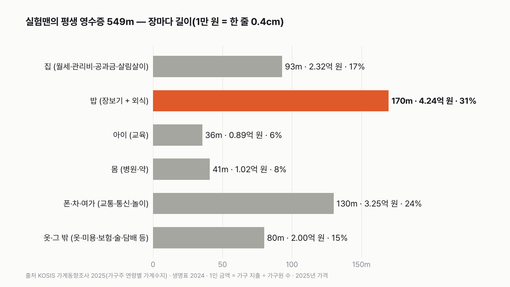
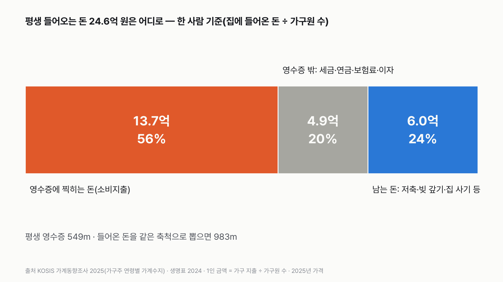
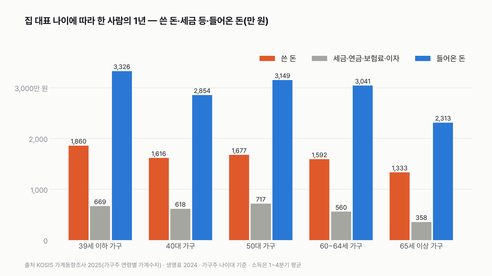
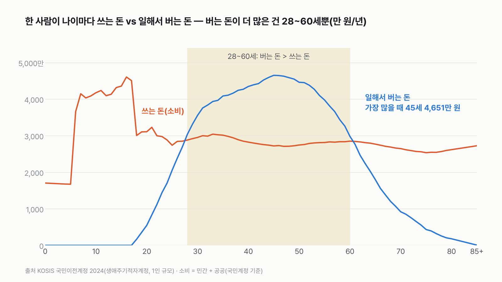

실험맨의 평생 영수증
"평생 얼마 쓰냐"는 막연하지만, 한 달로 나누면 137만 원이에요. 아기부터 어르신까지 모두 넣은 한 사람 평균이에요. 내 한 달 카드 명세서를 이 영수증 옆에 놓아 보면, 어느 줄이 평균보다 긴지 바로 보여요.

3줄 요약
- 평균 한국인 실험맨이 평생 쓰는 돈은 약 13억 7천만 원이에요. 1만 원을 영수증 한 줄로 뽑으면 549m, 롯데월드타워(555m)와 거의 같은 길이예요.
- 가장 긴 줄은 집이 아니라 밥이에요. 장보기와 외식을 합하면 4억 2천만 원으로, 집에 드는 돈(월세·관리비·공과금·살림살이, 집값 제외)의 1.8배예요. 외식만 따로 봐도 장보기보다 길어요.
- 같은 방법으로 평생 들어오는 돈은 약 24억 6천만 원이에요(집에 들어온 돈을 식구 수로 나눠 내게 돌아오는 돈, 아이·어르신에게 나눈 돈과 연금 포함). 영수증에 찍히는 건 그중 56%이고, 20%는 세금·연금·보험료·이자, 24%는 저축이나 빚 갚기로 가요.
평생 영수증 549m, 롯데월드타워와 거의 같아요
실험맨이 평생 쓰는 돈은 13억 7,330만 원이에요. 1만 원을 한 줄로 찍으면 13만 7천 줄, 이어 붙이면 549m예요. 롯데월드타워 높이 555m에 6m 모자라요. 하루로 나누면 영수증이 1.8cm씩, 한 달이면 137줄씩 길어져요.
한 달 137만 원은 생각보다 작게 느껴질 수 있어요. 아기부터 어르신까지 모두 넣은 한 사람 평균이라서예요. 집 한 채에 여러 명이 함께 살면 월세·전기료·자동차를 나눠 쓰니까 한 사람에게 돌아오는 금액이 줄어요.
집: 평생 2억 3천만 원, 93m — 집값은 거의 없어요
집에 드는 돈(월세·관리비·수리비, 전기·가스·수도 요금, 가구·가전 같은 살림살이)은 평생 2억 3,250만 원, 영수증 93m예요. 평생 영수증의 17%예요. 그중 월세 같은 실제주거비는 6,820만 원, 전기·가스 같은 연료비는 5,130만 원이에요.
평생 월세가 6,820만 원밖에 안 되는 건, 자기 집에 사는 사람은 월세가 거의 0원으로 찍혀서예요. 2025년 도시 가구를 보면 자기 집에 사는 집(54%)의 실제주거비는 한 달 1만 원, 전세(16%)는 6천 원인데, 월세 집(23%)은 42만 원이에요. 집을 사는 돈, 전세 보증금, 대출 원금은 '쓴 돈'이 아니라 재산을 바꾼 것으로 보고 영수증에 넣지 않아요. 그 돈은 뒤에서 볼 '남는 돈' 칸으로 가요.
밥: 4억 2천만 원, 앞에서 본 집의 1.8배
가장 긴 장은 밥이에요. '음식·숙박'(외식과 숙박비) 90m와 '식료품'(장보기) 80m를 합하면 4억 2,420만 원, 영수증 170m로 평생 영수증의 31%예요. 집의 1.8배예요.
외식이 장보기보다 많을 줄은 몰랐어요. 외식만 따로 보면 2억 1,460만 원으로 장보기 1억 9,930만 원보다 많아요. 다만 나이에 따라 달라요. 39세 이하 가구의 한 사람은 1년에 외식·숙박에 359만 원, 장보기에 197만 원을 써요. 65세 이상 가구로 가면 거꾸로 장보기 309만 원, 외식·숙박 155만 원이에요.
아이: 교육비 8,870만 원, 40대 집에 몰려요
교육에 드는 돈은 평생 8,870만 원, 영수증 36m예요. 그중 학원·보습교육이 7,220만 원으로 81%이고, 학교 등록금 같은 정규교육은 1,400만 원이에요. 학교 교육비는 대부분 나라가 내서 가계 영수증에 덜 찍혀요. 나라가 낸 돈까지 넣으면 어떻게 달라지는지는 아래 나라 통계 절에서 볼게요.
교육비는 시기가 몰려 있어요. 40대 가구는 한 집이 한 달에 교육비로 54만 8천 원, 1년에 657만 원을 써요. 집 안의 한 사람으로 나누면 1년 230만 원으로, 39세 이하 가구(85만 원)의 2.7배예요. 65세 이상 가구에서는 11만 원으로 줄어요.
몸: 병원비 1억 230만 원, 늙을수록 두꺼워져요
보건(병원·약·안경 등)에 드는 돈은 평생 1억 230만 원, 41m예요. 39세 이하 가구의 한 사람은 1년에 97만 원을 쓰지만, 65세 이상 가구에서는 180만 원으로 1.8배예요.
65세 이후(태어난 사람 평균 19.9년 더)에 평생 병원비의 35%를 써요. 같은 기간 쓰는 돈 전체는 19%뿐이에요. 다른 줄은 짧아지는데 병원비 줄만 두꺼워지는 모습이에요.
폰·차·여가: 3억 2,530만 원, 젊을 때 특히 길어요
교통은 평생 1억 6,100만 원, 64m예요. 그중 자동차 구입이 4,810만 원, 자동차 연료비가 4,710만 원이에요. 정보통신은 7,750만 원이고, 그중 휴대폰·인터넷 요금이 4,470만 원이에요. 오락·문화(여행·운동·취미·반려동물 등)는 8,680만 원이에요.
세 줄을 합하면 3억 2,530만 원, 130m로 밥 다음으로 길어요. 39세 이하 가구 한 사람은 교통에 1년 243만 원, 오락·문화에 142만 원을 쓰고, 65세 이상 가구에서는 각각 130만 원, 59만 원이에요.
나머지 '옷·그 밖'은 80m예요. 옷·신발이 6,840만 원(27m), 미용·보험·장신구·복지시설 같은 기타상품·서비스가 1억 1,440만 원(46m), 술·담배가 1,750만 원(7m)이에요.
영수증 밖의 돈: 세금·연금·보험료·이자 4억 8,750만 원, 195m
영수증에 찍히지 않지만 꼬박꼬박 나가는 돈이 있어요. 세금, 국민연금·건강보험료 같은 사회보험료, 대출 이자, 그리고 경조사비처럼 다른 집에 보내는 돈이에요. 가계동향조사는 이 돈을 '비소비지출'로 따로 세요.
실험맨의 평생 비소비지출은 4억 8,750만 원이에요. 같은 축척으로 뽑으면 195m짜리 점선 띠예요. 일하는 나이에 가장 두꺼워요. 50대 가구 한 사람은 1년에 717만 원, 65세 이상 가구 한 사람은 358만 원이에요.
벌기 vs 쓰기: 평생 들어오는 돈 24억 6천만 원은 어디로 가나
같은 방법으로 세면 실험맨에게 평생 들어오는 돈은 24억 5,850만 원이에요. 집에 들어온 돈을 식구 수로 나눠 내게 돌아오는 돈이라, 아이와 어르신에게 나눈 돈, 연금 같은 받은 돈도 들어가요. 같은 축척으로 뽑으면 983m, 롯데월드타워 1.8개 높이예요.
이 돈의 56%(13억 7,330만 원)가 영수증에 찍히는 소비지출, 20%(4억 8,750만 원)가 영수증 밖의 돈이에요. 나머지 24%(5억 9,820만 원)가 남는 돈이에요. 저축, 대출 원금 갚기, 집이나 땅 사기에 들어가요. 앞에서 '집값은 영수증에 없다'고 한 돈이 이 칸에 있어요.

나이대별로 보면: 젊을 때 가장 많이 쓰고 늙으면 줄어요
한 사람이 1년에 쓰는 돈은 39세 이하 가구가 1,860만 원으로 가장 많고, 40대 1,616만 원, 50대 1,677만 원, 60~64세 1,592만 원, 65세 이상 1,333만 원이에요. 39세 이하 가구는 한 집에 평균 1.8명이 살아요. 65세 이상도 1.8명인데 1년 1,333만 원으로 500만 원 넘게 적어요. 외식·교통·놀이 줄이 특히 짧아져요.
나이로 끊어 보면 평생 영수증은 0~19세에 3억 4,600만 원, 20~39세에 3억 6,800만 원, 40~64세에 3억 9,300만 원, 65세 이후에 2억 6,600만 원이 찍혀요.

나이마다 쓰는 돈과 버는 돈을 따로 재는 나라 통계: 버는 돈이 더 많은 건 33년뿐
국민이전계정은 나이 한 살마다 한 사람이 쓰는 돈과 '내가 일해서 번 돈'을 따로 재요. 2024년 값을 보면 일해서 번 돈이 쓰는 돈보다 많은 나이는 28세부터 60세까지예요. 일해서 번 돈은 45세에 1년 4,651만 원으로 가장 많아요.
이 통계의 쓰는 돈(30~80세에 1년 2,500만~3,000만 원)은 앞의 가계동향보다 커요. 나라가 대신 내 주는 학교·병원비와, 내 집에 살 때 내는 것으로 치는 집세까지 넣어 세서 더 커요. 금액보다 두 선이 엇갈리는 나이를 보세요.
0~27세와 61세 이후는 쓰는 돈이 버는 돈보다 많아요. 그 차이는 부모, 나라(교육·의료·연금), 그리고 젊을 때 모아 둔 돈이 채워요. 7~17세에 쓰는 돈이 1년 4천만 원을 넘는 것은 앞에서 가계 영수증에 덜 찍힌다고 한 학교 교육비를 나라가 내는 돈까지 이 아이에게 넣어 세서예요.

내 영수증에서 가장 긴 줄은?
실험맨 영수증의 맨 위 줄은 밥이었어요. 그다음이 폰·차·여가, 집, 옷·그 밖, 몸, 아이 순이에요. 그런데 이건 평균이에요. 혼자 사는 30대라면 외식 줄이, 아이 키우는 40대라면 학원 줄이 먼저 튀어나올 거예요. 당신 영수증에서는 어느 줄이 가장 길까요?
다르게 세면
- 남자·여자 생명표로 늘리면: 1인 금액은 그대로 두고 생명표만 바꾸면, 남자(기대수명 80.8년)는 평생 13억 3,380만 원, 여자(86.6년)는 14억 1,280만 원이에요. 평생 들어오는 돈은 남자 23억 8,930만 원, 여자 25억 2,770만 원이에요.
- 0~9세를 40대 가구 금액으로 붙이면: 평생 소비지출이 13억 4,900만 원으로 1.8% 줄어요.
- 국민이전계정으로 세면: 나이별 1인 소비(나라가 내 주는 교육·의료 포함)를 2024년 생명표로 늘리면 평생 24억 4,620만 원이에요. 그중 가계가 직접 쓰는 민간소비는 16억 4,490만 원이에요. 내 집에 살 때의 집세 어림 같은 개념 차이가 있어서 가계동향의 13억 7,330만 원보다 커요. 같은 방법으로 일해서 번 돈은 평생 16억 4,290만 원이에요. 앞의 '평생 들어오는 돈' 24억 5,850만 원은 집에 들어온 돈을 식구 수로 나눈 것이라, 연금·이자·받은 돈까지 들어가서 이보다 커요.
- 아이에게 교육비를 몰아 주면: 국민이전계정의 민간교육소비는 평생 1억 4,560만 원으로, 본판의 교육비 8,870만 원보다 커요. 국민계정 기준이 달라서 그대로 비교하면 안 되지만, 본판의 교육비가 '집 안에서 똑같이 나눈' 금액이라 아이 때는 적게, 부모 나이 때는 많게 잡힌다는 점은 같아요.
이 숫자는 어디서 왔나요
출처
어떻게 셌나요
- 실험맨 한 사람의 1년: 집 대표(가구주)의 나이대별로 '가구가 한 달에 쓴 돈 ÷ 그 집의 평균 가구원 수'를 구하고 12를 곱했어요. 집 안의 모든 사람이 똑같이 나눠 쓴다고 봤어요.
- 나이와 집 연결: 20~39세는 39세 이하 가구, 40대는 40대 가구, 50대는 50대 가구, 60~64세는 60~64세 가구, 65세 이상은 65세 이상 가구의 1인 금액을 썼어요. 60~64세 가구는 표에 따로 없어서 '60세 이상'에서 '65세 이상'을 가구 수 비율로 빼서 만들었어요.
- 아이: 아이는 부모 집에 산다고 보고, 0~9세는 39세 이하 가구, 10~19세는 40대 가구의 1인 금액을 썼어요.
- 평생으로 늘리기: 2024년 생명표로 0세에 태어난 사람이 각 나이에서 평균 몇 해를 사는지 구해 곱하고 더했어요. 이 해들을 모두 더하면 기대수명 83.7년이에요. 일찍 세상을 떠나는 사람까지 넣은 '평균 한 사람'의 평생이에요.
- 가격: 2025년 가격 그대로예요. 물가 상승도, 이자도 넣지 않았어요. "지금 물가로 한 사람의 평생을 한 번에 산다면"으로 읽으면 돼요.
- 평생 들어오는 돈: 같은 표의 소득(일해서 번 돈, 장사로 번 돈, 이자·임대료, 연금·용돈 같은 받은 돈)을 같은 방법으로 늘렸어요. 일하지 않는 아이와 어르신도 집에 들어온 돈을 똑같이 나눠 받는 것으로 봤어요. 이 표의 소득은 분기 값만 있어서 2025년 네 분기를 평균했어요.
- 영수증 길이: 1만 원 = 영수증 한 줄, 한 줄 높이 0.4cm로 정했어요. 그래서 영수증 1cm는 2만 5천 원이에요.
- 장과 12개 항목: 영수증의 장은 가계동향조사 12개 항목을 묶은 거예요. 집 = 주거·수도·광열 + 가정용품·가사서비스, 밥 = 식료품·비주류음료 + 음식·숙박, 아이 = 교육, 몸 = 보건, 폰·차·여가 = 교통 + 정보통신 + 오락·문화, 옷·그 밖 = 의류·신발 + 주류·담배 + 기타상품·서비스예요. 12개 항목 그대로의 길이는 아래 차트예요.
한계 8가지
이 데이터로 말할 수 없는 것
- 집 안에서 모두 똑같이 나눠 쓴다고 봤어요. 실제로는 아이 학원비는 아이에게, 어르신 병원비는 어르신에게 더 들어요. 나이별 금액은 이 가정에 따라 달라지지만, 평생 합계는 크게 달라지지 않아요.
- 0~9세 아이에게 39세 이하 가구(혼자 사는 청년이 많은 가구)의 1인 금액이 붙어요. 40대 가구 금액으로 바꾸면 평생 합계가 1.8% 줄어요.
- 2025년 한 해의 여러 나이 사람들을 이어 붙인 '한 사람의 평생'이에요. 지금 20대가 60대가 됐을 때 쓸 돈은 지금 60대와 다를 거예요.
- 물가 상승을 넣지 않았어요. 실제로 한 사람이 평생 낸 돈(옛날 물가)은 이보다 작아요.
- 가계동향조사는 집을 사는 돈, 전세 보증금, 대출 원금을 소비지출에 넣지 않아요. 나라나 회사가 대신 내는 돈(건강보험 공단 부담, 학교 교육비)도 빠져요. 그래서 학교 교육비는 가계 영수증에 덜 찍히고, 나라가 낸 돈까지 넣는 국민이전계정에서는 7~17세 쓰는 돈이 1년 4천만 원을 넘어요.
- 주거형태별 실제주거비는 도시 가구 값이에요(전국 값은 이 표에 없어요).
- 소득은 분기 값을 평균했고, 지출은 연간 값이에요. 같은 해 같은 조사지만 집계 방식이 조금 달라요.
- 60~64세 가구는 '60세 이상'과 '65세 이상'의 차이로 만든 어림이에요.
새 글 나오면 받아 보기
피드 리더 앱에 이 사이트 주소를 한 번 넣어 두면, 새 글이 올라올 때 앱에 떠요. 가입이나 메일 주소는 필요 없어요.
받는 법 보기
- 피드 리더 앱을 하나 골라요. 새 글을 모아 보여 주는 앱이에요. 예를 들면 Feedly나 Inoreader가 있어요. 둘 다 무료고 웹·휴대폰에서 써요.
- 앱에서 '구독 추가'(+)를 누르고 아래 주소를 붙여 넣어요.
- 끝이에요. 새 글이 올라오면 앱 목록에 떠요.
https://protofu.github.io/opendata-insight/feed.xmlFeedly를 쓴다면 여기를 눌러 바로 추가할 수도 있어요.